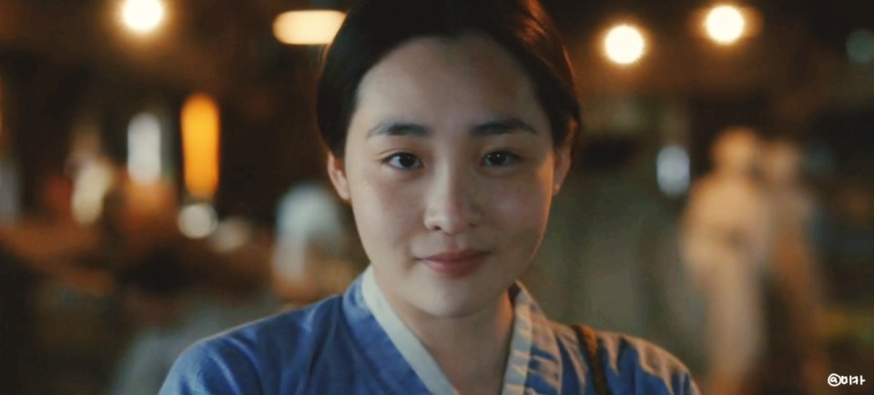

취향을 갖는 건 매우 중요하다. 취향이 쌓이면 그것은 우리 자신이 된다. 나는 앞으로 내가 무엇을 할지라도 취향과 감성을 절대 잃지 않음을 다짐한다.
수많은 영상 컨텐츠 속에 꼭 존재해야만 하는 컨텐츠에 대해 생각해 봤다. 한국은 넷플릭스가 컨텐츠의 중심에 있다. 오징어 게임과 DP를 필두로 지옥, 마이네임, 고요의 바다, 지우학 등이 성행했는데, 생각하면 할수록 뭔가 중요한 게 빠져 있는 것 같다. 코리아 넷플릭스의 방향성에 항상 의구심이 들었다. 그 이유는 그 방향성이 '보는 즐거움'을 넘어서서, 자극적이고 오락적인 것으로만 향하고 있기 때문이다. 특히 <지금 우리 학교는>은 자극적인 컨텐츠를 바라는 한국 대중의 참담함을 그대로 담고 있다.. 온갖 (대중이 바라는) 상업적 요소란 요소는 전부 우겨넣었다. 잔인하고, 신파적이고, 구시대적이다. 심지어 넷플릭스 특유의 젠더 감성도 깡그리 무시하고, 구시대적 여성캐릭터를 구현했다. (영상 때깔 아니었으면, 진즉에 넷플 드라마인 거 까먹었을 것임). <지금 우리 학교는>에 대해선 할말이 참 많다. 장르 면에서도 말이다. b급은 혼합장르로 끼워넣기 참 힘든 장르다. 잘못하다간 장면이 튀기 일쑤다. 지우학은 여러모로 안타까운 컨텐츠다. 내가 생각했을 때 지우학은 오락성을 쫓다 결국 중요한 건 놓쳐버린 것 같다. 분명 좋은 점도 있을 것..?.. 모르겠다 그냥 요즘 너무 욕먹서 안타까울 지경.. 그래도 망하진 않겠지 넷플이 투자했잖아..응응..